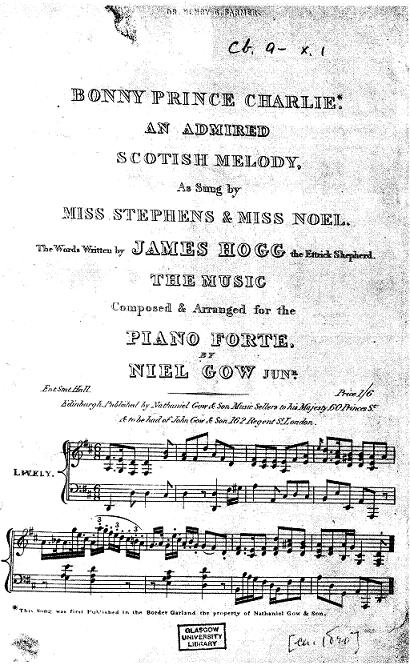
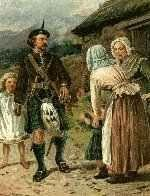

Came Ye by Atholl?
Dis, viens-tu d'Atholl?
A gathering song by James Hogg
Tune - Mélodie"Bonny Prince Charlie" from "A Border Garland", published by Nathaniel Gow & Son ca. 1819
Original arrangement by Niel Gow

Variant 1 sequenced by Lesley Nelson
Double jig (6/8)
Variant 2 sequenced by Christian Souchon
Single jig (12/8)
Variant 3 sequenced by Christian Souchon
Slip Jig (9/8)
|
To the tune:
This song first appeared in the musical publication "A Border Garland", a collection of 9 songs, in c. 1819, with the title ‘Charlie’ to a melody by Niel Gow junior (born 1795), who also most probably provided its musical setting. Like ‘The Lament of Flora McDonald’ it appeared in several miscellaneous song sheets during the 1820s and ‘30. Hogg also included it in his "Songs by the Ettrick Shepherd" in 1831, even though he noted that ‘There can be no dispute that it is one of my worst’, as he had "dashed the words down at random". (Was he not fishing for compliments! - see second note below) Source: University of Sterling, James Hogg Research Project. |
A propos de la mélodie:
Ce chant fut publié pour la première fois vers 1819, sous le titre "Charlie", dans le recueil de musique "Une Guirlande du Border", comportant 9 morceaux. La musique était de Niel Gow junior (né en 1795), et il est probable que c'est lui qui adapta la musique au texte de Hogg. Comme "La lamention de Flora McDonald" ce chant parut dans diverses miscellanées de musique vocale au cours des années 1820 et 1830. Hogg l'inséra dans ses "Chansons du Berger d'Ettrick" en 1831, assorti d'une note surprenante: "Il n'est pas douteux que c'est là l'un de mes plus mauvais chants", pour lequel "j'avais jeté les mots sur le papier, comme ils me venaient" ( l'hypocrite! - voir 2ème note ci-après) |

|
1. Cam' ye by Atholl, lad wi' the philabeg,
Down by the Tummel, or banks of the Garry? Saw ye the lads, wi' their bonnets an' white cockades, Leaving their mountains to follow Prince Charlie.
Follow thee, follow thee, wha wadna follow thee?
Follow thee, follow thee, wha wadna follow thee?
Follow thee, follow thee, wha wadna follow thee?
Follow thee, follow thee, wha wadna follow thee?
|
 J.Michael Brown, frontispice to 'Scots Minstrelsie',1890 |
1. Dis, viens-tu donc d'Atholl, o jeune homme d'Ecosse?
En suivant le Tummel ou des bords du Garry? As-tu vu des bonnets ornés de la cocarde? Quittent-ils tous leurs monts pour se joindre à Charlie? Te suivre, te suivre, qui ne voudrait te suivre? Depuis longtemps tu nous portes amour et foi! Charlie, Charlie, qui ne voudrait te suivre? Dans notre cœur, déjà, Charlie est roi! 2. Moi je n'ai qu'un seul fils, mon courageux Donald, Mais si j'en avais dix, tous suivraient Glengarry. Honneur à McDonald, au vaillant Clanranald! Car ceux-là donneront leur vie pour leur Charlie!
Te suivre, te suivre, qui ne voudrait te suivre?
Te suivre, te suivre, qui ne voudrait te suivre?
|
|
"Follow thee..."
: Queen Victoria selected this march to be sung by a famous singer of Scottish songs during her visit to Scotland in 1842, as a token for a normal relationship between England and Scotland 100 years after the '45'. Now, this tune is a 'gathering song' intended to recruit Highlanders for the rebellion against the united Hanoverian monarch of England and Scotland.
"Their Charlie...My Charlie" : The song makes a subtle distinction between the Chiefs who were from the very outset willing to support Charlie's attempt: the Clan Donald chiefs who will "die for THEIR Charlie" and the Chiefs who are still to be won over: Lochiel, Stewart of Appin, Rob Roy McGregor, Lord Murray, McKintosh, "the lads I can trust with MY Charlie". "Came ye by Atholl..." :From Borodale where he landed on 26th of July, the Prince sent off messengers to all the chiefs from whom he expected assistance. "Atholl, Tummel, Garry...": Click on the button "Map" to spot the places mentioned in the song (dwelling of the clans named in verse 3). "I have but one son...Donald"... "I'll kneel to them" : the singer is a mother. "follow Glengarry" = Angus McD of Glengary, who fought at the very first battle, Highbridge, "Health to McDonald" = Sir Alexander McD of Keppoch "Gallant ClanRanald" = Young Ranald McD of ClanRanald. "Roy de Kildarlie" : possibly the famous Rob Roy McGregor. "King of the Highland hearts", "down through the Lowlands" an opposition that was not only a poetical effect... |
"Te suivre...":
La Reine Victoria demanda que cette marche soit mise au programme du récital d'un illustre interprète de chants écossais lors de son voyage en Ecosse en 1842 pour marquer la normalisation des relations entre les deux royaumes d'Angleterre et d'Ecosse, 100 ans après les événements de 1745. Or, il s'agit d'un "chant de rassemblement" destiné à recruter des Highlanders pour la rébellion contre le double monarque Hanovrien.
"Leur Charlie... Mon Charlie" : Le chant introduit une distinction subtile entre les Chefs qui, dès l'origine , apportèrent leur soutien à Charles: les chefs des Clans Donald qui "donneront leur vie pour LEUR Charlie", et les chefs qu'il fallait encore convaincre: Lochiel, Stewart d'Appin, Rob Roy McGregor, Lord Murray, McKintosh "qui voudront mourir pour MON Charlie". "Viens-tu d'Atholl...": de Borodale où il débarqua le 26 juillet le Prince envoya des messagers à tous les chefs dont il sollicitait l'aide. "Atholl, Tummel, Garry...": Cliquer sur le bouton "Carte" pour repérer les lieux cités dans le chant ( terres des clans visés à la 3ème strophe). "Je n'ai qu'un fils...Donald", "je ploierai les genoux": ce sont là les mots d'une mère. : "Suivraient Glengarry" = Angus McD de Glengary, qui livra la première bataille à Highbridge. "Honneur à McDonald" = Sir Alexandre McD de Keppoch "Vaillant ClanRanald" = le Jeune Ranald McD de ClanRanald. "Roy de Kildarlie" : on peut supposer qu'il s'agit du fameux Rob Roy McGregor. "Dans nos cœurs -de Highlanders", "et par les Basses Terres" une opposition qui n'est pas seulement un effet poétique... |
| Click to know more about CLAN DONALD |
The "Corries" sing "Came Ye by Atholl?"